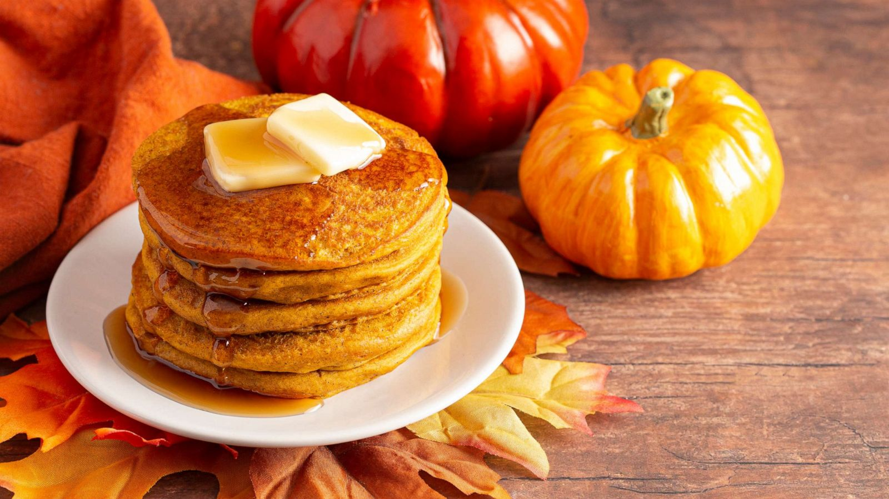

Delicious Pumpkin Pancakes Recipe

Warm and fluffy pumpkin flavored pancakes perfect for fall or anytime of the year.
Have a little taste of fall with your breakfast with these scrumptous and fluffy pumpkin flavored pancakes.
They go great with or without syrup and take little time to make, and you can use either canned or cooked fresh pumpkin.
Ingredients
- 1 1/2 cups of milk
- 1 cup of pumpkin puree
- 1 large egg
- 2 tablespoons vegetable oil
- 2 tablespoons vinegar
- 2 cups all-purpose flour
- 3 tablespoons brown sugar
- 2 teaspoons baking powder
- 1 teaspoon baking soda
- 1 teaspoon ground allspice
- 1 teaspoon ground cinnamon
- 1/2 teaspoon ground ginger
- 1/2 teaspoon salt
- cooking spray
Instructions
- Gather all ingredients
- Stir together milk, pumpkin, egg, oil, and vinegar in a large bowl until well combined.
- Whisk together flour, brown sugar, baking powder, baking soda, allspice, cinnamon, ginger, and salt in a separate bowl.
Add to pumpkin mixture; whisk just until combined.
- Spray a griddle or frying pan with cooking spray;
heat over medium-high heat.
- Pour 3 to 4 tablespoons batter for each pancake onto the hot griddle and flatten batter slightly with a spoon.
- Cook until small bubbles appear, about 2 minutes.
- Flip and cook until golden brown, about 2 more minutes. Repeat with remaining batter.
- Serve hot and enjoy!